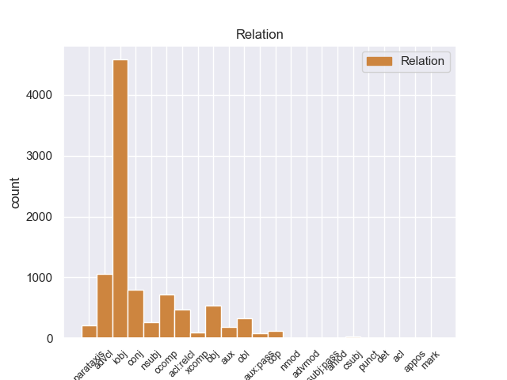
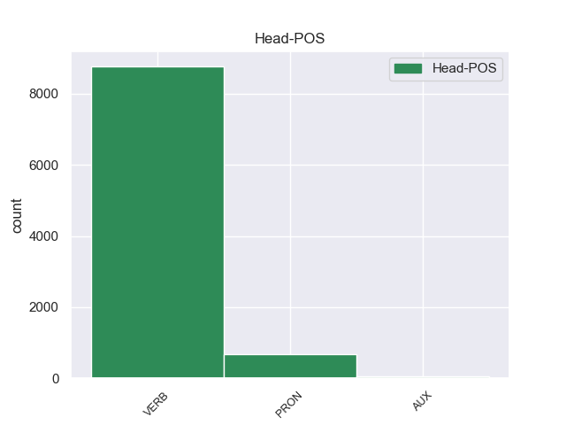
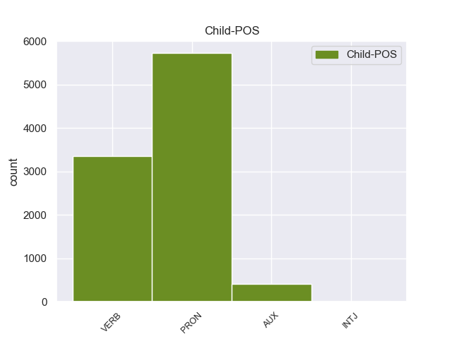

Distribution of features within this leaf



Agreement Rules sorted by frequency.
- When the dependent token is the indirect object(iobj) of the head token,
1 La _ _ _ _ 0 _ _ _
2 hidrocefalia _ _ _ _ 0 _ _ _
3 comunicante _ _ _ _ 0 _ _ _
4 ocurre _ _ _ _ 0 _ _ _
5 cuando _ _ _ _ 0 _ _ _
6 el _ _ _ _ 0 _ _ _
7 flujo _ _ _ _ 0 _ _ _
8 de _ _ _ _ 0 _ _ _
9 el _ _ _ _ 0 _ _ _
10 líquido _ _ _ _ 0 _ _ _
11 cefaloraquídeo _ _ _ _ 0 _ _ _
12 se él PRON _ Case=Acc,Dat|Person=3|PrepCase=Npr|PronType=Prs|Reflex=Yes 13 iobj _ _
13 ve ver VERB _ Mood=Ind|Number=Sing|Person=3|Tense=Pres|VerbForm=Fin 0 _ _ _
14 bloqueado _ _ _ _ 0 _ _ _
15 después _ _ _ _ 0 _ _ _
16 de _ _ _ _ 0 _ _ _
17 salir _ _ _ _ 0 _ _ _
18 de _ _ _ _ 0 _ _ _
19 los _ _ _ _ 0 _ _ _
20 ventrículos _ _ _ _ 0 _ _ _
21 a _ _ _ _ 0 _ _ _
22 el _ _ _ _ 0 _ _ _
23 espacio _ _ _ _ 0 _ _ _
24 subaracnoideo _ _ _ _ 0 _ _ _
25 . _ _ _ _ 0 _ _ _
1 La _ _ _ _ 0 _ _ _
2 hidrocefalia _ _ _ _ 0 _ _ _
3 comunicante _ _ _ _ 0 _ _ _
4 ocurre ocurrir VERB _ Mood=Ind|Number=Sing|Person=3|Tense=Pres|VerbForm=Fin 0 _ _ _
5 cuando _ _ _ _ 0 _ _ _
6 el _ _ _ _ 0 _ _ _
7 flujo _ _ _ _ 0 _ _ _
8 de _ _ _ _ 0 _ _ _
9 el _ _ _ _ 0 _ _ _
10 líquido _ _ _ _ 0 _ _ _
11 cefaloraquídeo _ _ _ _ 0 _ _ _
12 se _ _ _ _ 0 _ _ _
13 ve ver VERB _ Mood=Ind|Number=Sing|Person=3|Tense=Pres|VerbForm=Fin 4 advcl _ _
14 bloqueado _ _ _ _ 0 _ _ _
15 después _ _ _ _ 0 _ _ _
16 de _ _ _ _ 0 _ _ _
17 salir _ _ _ _ 0 _ _ _
18 de _ _ _ _ 0 _ _ _
19 los _ _ _ _ 0 _ _ _
20 ventrículos _ _ _ _ 0 _ _ _
21 a _ _ _ _ 0 _ _ _
22 el _ _ _ _ 0 _ _ _
23 espacio _ _ _ _ 0 _ _ _
24 subaracnoideo _ _ _ _ 0 _ _ _
25 . _ _ _ _ 0 _ _ _
1 El _ _ _ _ 0 _ _ _
2 INI _ _ _ _ 0 _ _ _
3 cumplía _ _ _ _ 0 _ _ _
4 así _ _ _ _ 0 _ _ _
5 con _ _ _ _ 0 _ _ _
6 una _ _ _ _ 0 _ _ _
7 doble _ _ _ _ 0 _ _ _
8 función _ _ _ _ 0 _ _ _
9 : _ _ _ _ 0 _ _ _
10 la él PRON _ Case=Acc|Gender=Fem|Number=Sing|Person=3|PrepCase=Npr|PronType=Prs 0 _ _ _
11 de _ _ _ _ 0 _ _ _
12 llevar _ _ _ _ 0 _ _ _
13 el _ _ _ _ 0 _ _ _
14 desarrollo _ _ _ _ 0 _ _ _
15 a _ _ _ _ 0 _ _ _
16 las _ _ _ _ 0 _ _ _
17 zonas _ _ _ _ 0 _ _ _
18 rurales _ _ _ _ 0 _ _ _
19 y _ _ _ _ 0 _ _ _
20 la él PRON _ Case=Acc|Gender=Fem|Number=Sing|Person=3|PrepCase=Npr|PronType=Prs 10 conj _ _
21 de _ _ _ _ 0 _ _ _
22 recuperar _ _ _ _ 0 _ _ _
23 a _ _ _ _ 0 _ _ _
24 las _ _ _ _ 0 _ _ _
25 culturas _ _ _ _ 0 _ _ _
26 indígenas _ _ _ _ 0 _ _ _
27 aquellas _ _ _ _ 0 _ _ _
28 características _ _ _ _ 0 _ _ _
29 que _ _ _ _ 0 _ _ _
30 pudieran _ _ _ _ 0 _ _ _
31 ser _ _ _ _ 0 _ _ _
32 integradas _ _ _ _ 0 _ _ _
33 a _ _ _ _ 0 _ _ _
34 el _ _ _ _ 0 _ _ _
35 patrimonio _ _ _ _ 0 _ _ _
36 cultural _ _ _ _ 0 _ _ _
37 de _ _ _ _ 0 _ _ _
38 la _ _ _ _ 0 _ _ _
39 nación _ _ _ _ 0 _ _ _
40 . _ _ _ _ 0 _ _ _
1 La _ _ _ _ 0 _ _ _
2 publicación _ _ _ _ 0 _ _ _
3 estima estimar VERB _ Mood=Ind|Number=Sing|Person=3|Tense=Pres|VerbForm=Fin 0 _ _ _
4 que _ _ _ _ 0 _ _ _
5 Stewart _ _ _ _ 0 _ _ _
6 , _ _ _ _ 0 _ _ _
7 que _ _ _ _ 0 _ _ _
8 además _ _ _ _ 0 _ _ _
9 es _ _ _ _ 0 _ _ _
10 la _ _ _ _ 0 _ _ _
11 actriz _ _ _ _ 0 _ _ _
12 más _ _ _ _ 0 _ _ _
13 joven _ _ _ _ 0 _ _ _
14 de _ _ _ _ 0 _ _ _
15 la _ _ _ _ 0 _ _ _
16 lista _ _ _ _ 0 _ _ _
17 , _ _ _ _ 0 _ _ _
18 ingresó ingresar VERB _ Mood=Ind|Number=Sing|Person=3|Tense=Past|VerbForm=Fin 3 ccomp _ _
19 25 _ _ _ _ 0 _ _ _
20 millones _ _ _ _ 0 _ _ _
21 de _ _ _ _ 0 _ _ _
22 dólares _ _ _ _ 0 _ _ _
23 por _ _ _ _ 0 _ _ _
24 encarnar _ _ _ _ 0 _ _ _
25 a _ _ _ _ 0 _ _ _
26 Bella _ _ _ _ 0 _ _ _
27 Swan _ _ _ _ 0 _ _ _
28 en _ _ _ _ 0 _ _ _
29 las _ _ _ _ 0 _ _ _
30 últimas _ _ _ _ 0 _ _ _
31 dos _ _ _ _ 0 _ _ _
32 entregas _ _ _ _ 0 _ _ _
33 de _ _ _ _ 0 _ _ _
34 la _ _ _ _ 0 _ _ _
35 saga _ _ _ _ 0 _ _ _
36 ( _ _ _ _ 0 _ _ _
37 12,5 _ _ _ _ 0 _ _ _
38 millones _ _ _ _ 0 _ _ _
39 por _ _ _ _ 0 _ _ _
40 cada _ _ _ _ 0 _ _ _
41 una _ _ _ _ 0 _ _ _
42 ) _ _ _ _ 0 _ _ _
43 , _ _ _ _ 0 _ _ _
44 dirigidas _ _ _ _ 0 _ _ _
45 por _ _ _ _ 0 _ _ _
46 Bill _ _ _ _ 0 _ _ _
47 Condon _ _ _ _ 0 _ _ _
48 . _ _ _ _ 0 _ _ _
1 En _ _ _ _ 0 _ _ _
2 lo él PRON _ Case=Acc|Gender=Masc|Number=Sing|Person=3|PrepCase=Npr|PronType=Prs 0 _ _ _
3 que _ _ _ _ 0 _ _ _
4 a _ _ _ _ 0 _ _ _
5 la _ _ _ _ 0 _ _ _
6 propiedad _ _ _ _ 0 _ _ _
7 se _ _ _ _ 0 _ _ _
8 refiere referir VERB _ Mood=Ind|Number=Sing|Person=3|Tense=Pres|VerbForm=Fin 2 acl:relcl _ SpaceAfter=No
9 , _ _ _ _ 0 _ _ _
10 una _ _ _ _ 0 _ _ _
11 extensión _ _ _ _ 0 _ _ _
12 de _ _ _ _ 0 _ _ _
13 1,373 _ _ _ _ 0 _ _ _
14 hectáreas _ _ _ _ 0 _ _ _
15 es _ _ _ _ 0 _ _ _
16 privada _ _ _ _ 0 _ _ _
17 y _ _ _ _ 0 _ _ _
18 otra _ _ _ _ 0 _ _ _
19 de _ _ _ _ 0 _ _ _
20 9,121 _ _ _ _ 0 _ _ _
21 es _ _ _ _ 0 _ _ _
22 ejidal _ _ _ _ 0 _ _ _
23 ; _ _ _ _ 0 _ _ _
1 Las _ _ _ _ 0 _ _ _
2 fechas _ _ _ _ 0 _ _ _
3 de _ _ _ _ 0 _ _ _
4 recolección _ _ _ _ 0 _ _ _
5 y _ _ _ _ 0 _ _ _
6 los _ _ _ _ 0 _ _ _
7 procedimientos _ _ _ _ 0 _ _ _
8 para _ _ _ _ 0 _ _ _
9 su _ _ _ _ 0 _ _ _
10 preparación _ _ _ _ 0 _ _ _
11 y _ _ _ _ 0 _ _ _
12 almacenamiento _ _ _ _ 0 _ _ _
13 varían _ _ _ _ 0 _ _ _
14 según _ _ _ _ 0 _ _ _
15 de _ _ _ _ 0 _ _ _
16 que _ _ _ _ 0 _ _ _
17 planta _ _ _ _ 0 _ _ _
18 se _ _ _ _ 0 _ _ _
19 trate _ _ _ _ 0 _ _ _
20 y _ _ _ _ 0 _ _ _
21 de _ _ _ _ 0 _ _ _
22 los _ _ _ _ 0 _ _ _
23 conocimientos _ _ _ _ 0 _ _ _
24 decantados _ _ _ _ 0 _ _ _
25 a _ _ _ _ 0 _ _ _
26 traves _ _ _ _ 0 _ _ _
27 de _ _ _ _ 0 _ _ _
28 el _ _ _ _ 0 _ _ _
29 tiempo _ _ _ _ 0 _ _ _
30 por _ _ _ _ 0 _ _ _
31 las _ _ _ _ 0 _ _ _
32 varias _ _ _ _ 0 _ _ _
33 culturas _ _ _ _ 0 _ _ _
34 que _ _ _ _ 0 _ _ _
35 los él PRON _ Case=Acc|Gender=Masc|Number=Plur|Person=3|PrepCase=Npr|PronType=Prs 36 obj _ _
36 utilizan utilizar VERB _ Mood=Ind|Number=Plur|Person=3|Tense=Pres|VerbForm=Fin 0 _ _ _
37 . _ _ _ _ 0 _ _ _
1 Esto _ _ _ _ 0 _ _ _
2 propició _ _ _ _ 0 _ _ _
3 que _ _ _ _ 0 _ _ _
4 sus _ _ _ _ 0 _ _ _
5 países _ _ _ _ 0 _ _ _
6 vecinos _ _ _ _ 0 _ _ _
7 le _ _ _ _ 0 _ _ _
8 atacaran atacar VERB _ Mood=Sub|Number=Plur|Person=3|Tense=Imp|VerbForm=Fin 0 _ _ _
9 en _ _ _ _ 0 _ _ _
10 lo él PRON _ Case=Acc|Gender=Masc|Number=Sing|Person=3|PrepCase=Npr|PronType=Prs 8 obl _ _
11 que _ _ _ _ 0 _ _ _
12 fue _ _ _ _ 0 _ _ _
13 conocido _ _ _ _ 0 _ _ _
14 como _ _ _ _ 0 _ _ _
15 la _ _ _ _ 0 _ _ _
16 Guerra _ _ _ _ 0 _ _ _
17 Escanesa _ _ _ _ 0 _ _ _
18 . _ _ _ _ 0 _ _ _
1 Ellos él PRON _ Case=Acc,Nom|Gender=Masc|Number=Plur|Person=3|PronType=Prs 2 nsubj _ _
2 sirven servir VERB _ Mood=Ind|Number=Plur|Person=3|Tense=Pres|VerbForm=Fin 0 _ _ _
3 como _ _ _ _ 0 _ _ _
4 una _ _ _ _ 0 _ _ _
5 escala _ _ _ _ 0 _ _ _
6 para _ _ _ _ 0 _ _ _
7 las _ _ _ _ 0 _ _ _
8 aves _ _ _ _ 0 _ _ _
9 acuáticas _ _ _ _ 0 _ _ _
10 migratorias _ _ _ _ 0 _ _ _
11 y _ _ _ _ 0 _ _ _
12 las _ _ _ _ 0 _ _ _
13 aves _ _ _ _ 0 _ _ _
14 playeras _ _ _ _ 0 _ _ _
15 . _ _ _ _ 0 _ _ _
1 Su _ _ _ _ 0 _ _ _
2 construcción _ _ _ _ 0 _ _ _
3 se _ _ _ _ 0 _ _ _
4 emprendió emprender VERB _ Mood=Ind|Number=Sing|Person=3|Tense=Past|VerbForm=Fin 0 _ _ _
5 coincidiendo _ _ _ _ 0 _ _ _
6 con _ _ _ _ 0 _ _ _
7 el _ _ _ _ 0 _ _ _
8 entonces _ _ _ _ 0 _ _ _
9 presidente _ _ _ _ 0 _ _ _
10 Marcos _ _ _ _ 0 _ _ _
11 Pérez _ _ _ _ 0 _ _ _
12 Jiménez _ _ _ _ 0 _ _ _
13 en _ _ _ _ 0 _ _ _
14 1956 _ _ _ _ 0 _ _ _
15 en _ _ _ _ 0 _ _ _
16 convergencia _ _ _ _ 0 _ _ _
17 con _ _ _ _ 0 _ _ _
18 el _ _ _ _ 0 _ _ _
19 plan _ _ _ _ 0 _ _ _
20 de _ _ _ _ 0 _ _ _
21 modernización _ _ _ _ 0 _ _ _
22 de _ _ _ _ 0 _ _ _
23 Caracas _ _ _ _ 0 _ _ _
24 , _ _ _ _ 0 _ _ _
25 la _ _ _ _ 0 _ _ _
26 obra _ _ _ _ 0 _ _ _
27 se _ _ _ _ 0 _ _ _
28 finalizaría finalizar VERB _ Mood=Cnd|Number=Sing|Person=3|VerbForm=Fin 4 parataxis _ _
29 su _ _ _ _ 0 _ _ _
30 primera _ _ _ _ 0 _ _ _
31 etapa _ _ _ _ 0 _ _ _
32 en _ _ _ _ 0 _ _ _
33 1961 _ _ _ _ 0 _ _ _
34 . _ _ _ _ 0 _ _ _
1 En _ _ _ _ 0 _ _ _
2 la _ _ _ _ 0 _ _ _
3 Unión _ _ _ _ 0 _ _ _
4 Europea _ _ _ _ 0 _ _ _
5 existen _ _ _ _ 0 _ _ _
6 18 _ _ _ _ 0 _ _ _
7 millones _ _ _ _ 0 _ _ _
8 de _ _ _ _ 0 _ _ _
9 parados _ _ _ _ 0 _ _ _
10 y _ _ _ _ 0 _ _ _
11 50 _ _ _ _ 0 _ _ _
12 millones _ _ _ _ 0 _ _ _
13 de _ _ _ _ 0 _ _ _
14 pobres _ _ _ _ 0 _ _ _
15 , _ _ _ _ 0 _ _ _
16 a _ _ _ _ 0 _ _ _
17 pesar _ _ _ _ 0 _ _ _
18 de _ _ _ _ 0 _ _ _
19 ser _ _ _ _ 0 _ _ _
20 una _ _ _ _ 0 _ _ _
21 de _ _ _ _ 0 _ _ _
22 las _ _ _ _ 0 _ _ _
23 regiones _ _ _ _ 0 _ _ _
24 más _ _ _ _ 0 _ _ _
25 ricas _ _ _ _ 0 _ _ _
26 de _ _ _ _ 0 _ _ _
27 el _ _ _ _ 0 _ _ _
28 mundo _ _ _ _ 0 _ _ _
29 : _ _ _ _ 0 _ _ _
30 he he AUX _ Mood=Ind|Number=Sing|Person=1|Tense=Pres|VerbForm=Fin 31 aux _ _
31 aquí aquí VERB _ Mood=Ind|Number=Sing|Person=1|Tense=Past|VerbForm=Fin 0 _ _ _
32 el _ _ _ _ 0 _ _ _
33 resultado _ _ _ _ 0 _ _ _
34 de _ _ _ _ 0 _ _ _
35 esta _ _ _ _ 0 _ _ _
36 competencia _ _ _ _ 0 _ _ _
37 que _ _ _ _ 0 _ _ _
38 las _ _ _ _ 0 _ _ _
39 instituciones _ _ _ _ 0 _ _ _
40 europeas _ _ _ _ 0 _ _ _
41 se _ _ _ _ 0 _ _ _
42 proponen _ _ _ _ 0 _ _ _
43 favorecer _ _ _ _ 0 _ _ _
44 . _ _ _ _ 0 _ _ _
1 El _ _ _ _ 0 _ _ _
2 FC _ _ _ _ 0 _ _ _
3 Barcelona _ _ _ _ 0 _ _ _
4 de _ _ _ _ 0 _ _ _
5 Pep _ _ _ _ 0 _ _ _
6 va _ _ _ _ 0 _ _ _
7 dando _ _ _ _ 0 _ _ _
8 pasos _ _ _ _ 0 _ _ _
9 agigantados _ _ _ _ 0 _ _ _
10 a _ _ _ _ 0 _ _ _
11 su _ _ _ _ 0 _ _ _
12 último _ _ _ _ 0 _ _ _
13 fichaje _ _ _ _ 0 _ _ _
14 , _ _ _ _ 0 _ _ _
15 a _ _ _ _ 0 _ _ _
16 el _ _ _ _ 0 _ _ _
17 de _ _ _ _ 0 _ _ _
18 el _ _ _ _ 0 _ _ _
19 central _ _ _ _ 0 _ _ _
20 o _ _ _ _ 0 _ _ _
21 lateral _ _ _ _ 0 _ _ _
22 que _ _ _ _ 0 _ _ _
23 es ser AUX _ Mood=Ind|Number=Sing|Person=3|Tense=Pres|VerbForm=Fin 24 cop _ _
24 lo él PRON _ Case=Acc|Gender=Masc|Number=Sing|Person=3|PrepCase=Npr|PronType=Prs 0 _ _ _
25 que _ _ _ _ 0 _ _ _
26 ha _ _ _ _ 0 _ _ _
27 pedido _ _ _ _ 0 _ _ _
28 el _ _ _ _ 0 _ _ _
29 técnico _ _ _ _ 0 _ _ _
30 como _ _ _ _ 0 _ _ _
31 último _ _ _ _ 0 _ _ _
32 esfuerzo _ _ _ _ 0 _ _ _
33 y _ _ _ _ 0 _ _ _
34 se _ _ _ _ 0 _ _ _
35 gastará _ _ _ _ 0 _ _ _
36 un _ _ _ _ 0 _ _ _
37 máximo _ _ _ _ 0 _ _ _
38 de _ _ _ _ 0 _ _ _
39 10 _ _ _ _ 0 _ _ _
40 millones _ _ _ _ 0 _ _ _
41 de _ _ _ _ 0 _ _ _
42 euros _ _ _ _ 0 _ _ _
43 que _ _ _ _ 0 _ _ _
44 es _ _ _ _ 0 _ _ _
45 lo _ _ _ _ 0 _ _ _
46 que _ _ _ _ 0 _ _ _
47 podría _ _ _ _ 0 _ _ _
48 haber _ _ _ _ 0 _ _ _
49 en _ _ _ _ 0 _ _ _
50 caja _ _ _ _ 0 _ _ _
51 . _ _ _ _ 0 _ _ _
1 Gerrick _ _ _ _ 0 _ _ _
2 D. _ _ _ _ 0 _ _ _
3 Kennedy _ _ _ _ 0 _ _ _
4 de _ _ _ _ 0 _ _ _
5 Los _ _ _ _ 0 _ _ _
6 Angeles _ _ _ _ 0 _ _ _
7 Times _ _ _ _ 0 _ _ _
8 señaló _ _ _ _ 0 _ _ _
9 las _ _ _ _ 0 _ _ _
10 similitudes _ _ _ _ 0 _ _ _
11 entre _ _ _ _ 0 _ _ _
12 « _ _ _ _ 0 _ _ _
13 » _ _ _ _ 0 _ _ _
14 y _ _ _ _ 0 _ _ _
15 singles _ _ _ _ 0 _ _ _
16 de _ _ _ _ 0 _ _ _
17 Knowles _ _ _ _ 0 _ _ _
18 anteriores _ _ _ _ 0 _ _ _
19 como _ _ _ _ 0 _ _ _
20 " _ _ _ _ 0 _ _ _
21 Irreplaceable _ _ _ _ 0 _ _ _
22 " _ _ _ _ 0 _ _ _
23 y _ _ _ _ 0 _ _ _
24 " _ _ _ _ 0 _ _ _
25 If _ _ _ _ 0 _ _ _
26 I _ _ _ _ 0 _ _ _
27 Were _ _ _ _ 0 _ _ _
28 a _ _ _ _ 0 _ _ _
29 Boy _ _ _ _ 0 _ _ _
30 " _ _ _ _ 0 _ _ _
31 , _ _ _ _ 0 _ _ _
32 y _ _ _ _ 0 _ _ _
33 llegó _ _ _ _ 0 _ _ _
34 a _ _ _ _ 0 _ _ _
35 la _ _ _ _ 0 _ _ _
36 conclusión _ _ _ _ 0 _ _ _
37 de _ _ _ _ 0 _ _ _
38 que _ _ _ _ 0 _ _ _
39 Knowles _ _ _ _ 0 _ _ _
40 , _ _ _ _ 0 _ _ _
41 " _ _ _ _ 0 _ _ _
42 sin _ _ _ _ 0 _ _ _
43 duda _ _ _ _ 0 _ _ _
44 sabe saber VERB _ Mood=Ind|Number=Sing|Person=3|Tense=Pres|VerbForm=Fin 0 _ _ _
45 cómo _ _ _ _ 0 _ _ _
46 deshacer deshacer VERB _ Mood=Sub|Number=Sing|Person=3|Tense=Pres|VerbForm=Fin 44 xcomp _ _
47 se _ _ _ _ 0 _ _ _
48 de _ _ _ _ 0 _ _ _
49 un _ _ _ _ 0 _ _ _
50 hombre _ _ _ _ 0 _ _ _
51 en _ _ _ _ 0 _ _ _
52 estilo _ _ _ _ 0 _ _ _
53 " _ _ _ _ 0 _ _ _
54 . _ _ _ _ 0 _ _ _
1 La _ _ _ _ 0 _ _ _
2 pregunta _ _ _ _ 0 _ _ _
3 es ser AUX _ Mood=Ind|Number=Sing|Person=3|Tense=Pres|VerbForm=Fin 8 aux:pass _ SpaceAfter=No
4 , _ _ _ _ 0 _ _ _
5 pues _ _ _ _ 0 _ _ _
6 , _ _ _ _ 0 _ _ _
7 qué _ _ _ _ 0 _ _ _
8 hacen hacer VERB _ Mood=Ind|Number=Plur|Person=3|Tense=Pres|VerbForm=Fin 0 _ _ _
9 los _ _ _ _ 0 _ _ _
10 productores _ _ _ _ 0 _ _ _
11 agrícolas _ _ _ _ 0 _ _ _
12 a _ _ _ _ 0 _ _ _
13 el _ _ _ _ 0 _ _ _
14 respecto _ _ _ _ 0 _ _ _
15 . _ _ _ _ 0 _ _ _
1 Él _ _ _ _ 0 _ _ _
2 es _ _ _ _ 0 _ _ _
3 un _ _ _ _ 0 _ _ _
4 chico _ _ _ _ 0 _ _ _
5 que _ _ _ _ 0 _ _ _
6 vive _ _ _ _ 0 _ _ _
7 en _ _ _ _ 0 _ _ _
8 una _ _ _ _ 0 _ _ _
9 familia _ _ _ _ 0 _ _ _
10 acomodada _ _ _ _ 0 _ _ _
11 , _ _ _ _ 0 _ _ _
12 pero _ _ _ _ 0 _ _ _
13 cuando _ _ _ _ 0 _ _ _
14 se _ _ _ _ 0 _ _ _
15 reveló _ _ _ _ 0 _ _ _
16 los _ _ _ _ 0 _ _ _
17 últimos _ _ _ _ 0 _ _ _
18 deseos _ _ _ _ 0 _ _ _
19 de _ _ _ _ 0 _ _ _
20 su _ _ _ _ 0 _ _ _
21 abuelo _ _ _ _ 0 _ _ _
22 fallecido _ _ _ _ 0 _ _ _
23 en _ _ _ _ 0 _ _ _
24 el _ _ _ _ 0 _ _ _
25 testamento _ _ _ _ 0 _ _ _
26 que _ _ _ _ 0 _ _ _
27 dejó _ _ _ _ 0 _ _ _
28 , _ _ _ _ 0 _ _ _
29 se _ _ _ _ 0 _ _ _
30 descubrió descubrir VERB _ Mood=Ind|Number=Sing|Person=3|Tense=Past|VerbForm=Fin 0 _ _ _
31 que _ _ _ _ 0 _ _ _
32 él _ _ _ _ 0 _ _ _
33 tenía tener VERB _ Mood=Ind|Number=Sing|Person=3|Tense=Imp|VerbForm=Fin 30 csubj _ _
34 que _ _ _ _ 0 _ _ _
35 trasladar _ _ _ _ 0 _ _ _
36 se _ _ _ _ 0 _ _ _
37 a _ _ _ _ 0 _ _ _
38 una _ _ _ _ 0 _ _ _
39 escuela _ _ _ _ 0 _ _ _
40 sólo _ _ _ _ 0 _ _ _
41 de _ _ _ _ 0 _ _ _
42 chicas _ _ _ _ 0 _ _ _
43 , _ _ _ _ 0 _ _ _
44 a _ _ _ _ 0 _ _ _
45 la _ _ _ _ 0 _ _ _
46 misma _ _ _ _ 0 _ _ _
47 que _ _ _ _ 0 _ _ _
48 en _ _ _ _ 0 _ _ _
49 su _ _ _ _ 0 _ _ _
50 tiempo _ _ _ _ 0 _ _ _
51 fue _ _ _ _ 0 _ _ _
52 su _ _ _ _ 0 _ _ _
53 madre _ _ _ _ 0 _ _ _
54 y _ _ _ _ 0 _ _ _
55 que _ _ _ _ 0 _ _ _
56 fundó _ _ _ _ 0 _ _ _
57 sus _ _ _ _ 0 _ _ _
58 antecesores _ _ _ _ 0 _ _ _
59 . _ _ _ _ 0 _ _ _
1 Señor _ _ _ _ 0 _ _ _
2 Presidente _ _ _ _ 0 _ _ _
3 , _ _ _ _ 0 _ _ _
4 me _ _ _ _ 0 _ _ _
5 he _ _ _ _ 0 _ _ _
6 abstenido _ _ _ _ 0 _ _ _
7 en _ _ _ _ 0 _ _ _
8 la _ _ _ _ 0 _ _ _
9 votación _ _ _ _ 0 _ _ _
10 sobre _ _ _ _ 0 _ _ _
11 la _ _ _ _ 0 _ _ _
12 iniciativa _ _ _ _ 0 _ _ _
13 EQUAL _ _ _ _ 0 _ _ _
14 también _ _ _ _ 0 _ _ _
15 en _ _ _ _ 0 _ _ _
16 mi _ _ _ _ 0 _ _ _
17 calidad _ _ _ _ 0 _ _ _
18 de _ _ _ _ 0 _ _ _
19 representante _ _ _ _ 0 _ _ _
20 de _ _ _ _ 0 _ _ _
21 el _ _ _ _ 0 _ _ _
22 Partido _ _ _ _ 0 _ _ _
23 de _ _ _ _ 0 _ _ _
24 los _ _ _ _ 0 _ _ _
25 Pensionistas _ _ _ _ 0 _ _ _
26 ante _ _ _ _ 0 _ _ _
27 el _ _ _ _ 0 _ _ _
28 Parlamento _ _ _ _ 0 _ _ _
29 Europeo _ _ _ _ 0 _ _ _
30 porque _ _ _ _ 0 _ _ _
31 , _ _ _ _ 0 _ _ _
32 a _ _ _ _ 0 _ _ _
33 pesar _ _ _ _ 0 _ _ _
34 de _ _ _ _ 0 _ _ _
35 que _ _ _ _ 0 _ _ _
36 introduce introducir VERB _ Mood=Ind|Number=Sing|Person=3|Tense=Pres|VerbForm=Fin 0 _ _ _
37 de _ _ _ _ 0 _ _ _
38 manera _ _ _ _ 0 _ _ _
39 más _ _ _ _ 0 _ _ _
40 significativa significativa AUX _ Mood=Ind|Number=Sing|Person=3|Tense=Pres|VerbForm=Fin 36 advmod _ _
41 que _ _ _ _ 0 _ _ _
42 antes _ _ _ _ 0 _ _ _
43 el _ _ _ _ 0 _ _ _
44 apoyo _ _ _ _ 0 _ _ _
45 a _ _ _ _ 0 _ _ _
46 los _ _ _ _ 0 _ _ _
47 proyectos _ _ _ _ 0 _ _ _
48 dirigidos _ _ _ _ 0 _ _ _
49 a _ _ _ _ 0 _ _ _
50 luchar _ _ _ _ 0 _ _ _
51 contra _ _ _ _ 0 _ _ _
52 la _ _ _ _ 0 _ _ _
53 discriminación _ _ _ _ 0 _ _ _
54 por _ _ _ _ 0 _ _ _
55 razón _ _ _ _ 0 _ _ _
56 de _ _ _ _ 0 _ _ _
57 edad _ _ _ _ 0 _ _ _
58 , _ _ _ _ 0 _ _ _
59 no _ _ _ _ 0 _ _ _
60 ha _ _ _ _ 0 _ _ _
61 sido _ _ _ _ 0 _ _ _
62 bastante _ _ _ _ 0 _ _ _
63 incisiva _ _ _ _ 0 _ _ _
64 y _ _ _ _ 0 _ _ _
65 concreta _ _ _ _ 0 _ _ _
66 a _ _ _ _ 0 _ _ _
67 el _ _ _ _ 0 _ _ _
68 respecto _ _ _ _ 0 _ _ _
69 . _ _ _ _ 0 _ _ _
1 En _ _ _ _ 0 _ _ _
2 primer _ _ _ _ 0 _ _ _
3 lugar _ _ _ _ 0 _ _ _
4 quisiera _ _ _ _ 0 _ _ _
5 señalar _ _ _ _ 0 _ _ _
6 que _ _ _ _ 0 _ _ _
7 los _ _ _ _ 0 _ _ _
8 ciudadanos _ _ _ _ 0 _ _ _
9 más _ _ _ _ 0 _ _ _
10 afectados _ _ _ _ 0 _ _ _
11 por _ _ _ _ 0 _ _ _
12 esta _ _ _ _ 0 _ _ _
13 no _ _ _ _ 0 _ _ _
14 intervención _ _ _ _ 0 _ _ _
15 son ser AUX _ Mood=Ind|Number=Plur|Person=3|Tense=Pres|VerbForm=Fin 0 _ _ _
16 sobre _ _ _ _ 0 _ _ _
17 todo _ _ _ _ 0 _ _ _
18 los él PRON _ Case=Acc|Gender=Masc|Number=Plur|Person=3|PrepCase=Npr|PronType=Prs 15 nmod _ _
19 que _ _ _ _ 0 _ _ _
20 desean _ _ _ _ 0 _ _ _
21 beneficiar _ _ _ _ 0 _ _ _
22 se _ _ _ _ 0 _ _ _
23 de _ _ _ _ 0 _ _ _
24 la _ _ _ _ 0 _ _ _
25 libre _ _ _ _ 0 _ _ _
26 circulación _ _ _ _ 0 _ _ _
27 de _ _ _ _ 0 _ _ _
28 personas _ _ _ _ 0 _ _ _
29 , _ _ _ _ 0 _ _ _
30 en _ _ _ _ 0 _ _ _
31 concreto _ _ _ _ 0 _ _ _
32 los _ _ _ _ 0 _ _ _
33 trabajadores _ _ _ _ 0 _ _ _
34 transfronterizos _ _ _ _ 0 _ _ _
35 . _ _ _ _ 0 _ _ _
1 Nuestro _ _ _ _ 0 _ _ _
2 deseo _ _ _ _ 0 _ _ _
3 es ser AUX _ Mood=Ind|Number=Sing|Person=3|Tense=Pres|VerbForm=Fin 6 punct _ _
4 que _ _ _ _ 0 _ _ _
5 se _ _ _ _ 0 _ _ _
6 incluyan incluyar VERB _ Mood=Ind|Number=Plur|Person=3|Tense=Pres|VerbForm=Fin 0 _ _ _
7 también _ _ _ _ 0 _ _ _
8 en _ _ _ _ 0 _ _ _
9 Internet _ _ _ _ 0 _ _ _
10 , _ _ _ _ 0 _ _ _
11 de _ _ _ _ 0 _ _ _
12 forma _ _ _ _ 0 _ _ _
13 que _ _ _ _ 0 _ _ _
14 exista _ _ _ _ 0 _ _ _
15 la _ _ _ _ 0 _ _ _
16 máxima _ _ _ _ 0 _ _ _
17 transparencia _ _ _ _ 0 _ _ _
18 respecto _ _ _ _ 0 _ _ _
19 a _ _ _ _ 0 _ _ _
20 este _ _ _ _ 0 _ _ _
21 punto _ _ _ _ 0 _ _ _
22 concreto _ _ _ _ 0 _ _ _
23 . _ _ _ _ 0 _ _ _
1 Señoría Señorir VERB _ Mood=Ind|Number=Sing|Person=3|Tense=Imp|VerbForm=Fin 14 nsubj:pass _ SpaceAfter=No
2 , _ _ _ _ 0 _ _ _
3 de _ _ _ _ 0 _ _ _
4 hecho _ _ _ _ 0 _ _ _
5 , _ _ _ _ 0 _ _ _
6 para _ _ _ _ 0 _ _ _
7 mejorar _ _ _ _ 0 _ _ _
8 la _ _ _ _ 0 _ _ _
9 reputación _ _ _ _ 0 _ _ _
10 de _ _ _ _ 0 _ _ _
11 la _ _ _ _ 0 _ _ _
12 Unión _ _ _ _ 0 _ _ _
13 es _ _ _ _ 0 _ _ _
14 efectivamente efectivamente VERB _ Mood=Sub|Number=Sing|Person=3|Tense=Pres|VerbForm=Fin 0 _ _ _
15 muy _ _ _ _ 0 _ _ _
16 importante _ _ _ _ 0 _ _ _
17 tanto _ _ _ _ 0 _ _ _
18 que _ _ _ _ 0 _ _ _
19 se _ _ _ _ 0 _ _ _
20 reduzca _ _ _ _ 0 _ _ _
21 el _ _ _ _ 0 _ _ _
22 plazo _ _ _ _ 0 _ _ _
23 que _ _ _ _ 0 _ _ _
24 media _ _ _ _ 0 _ _ _
25 entre _ _ _ _ 0 _ _ _
26 las _ _ _ _ 0 _ _ _
27 promesas _ _ _ _ 0 _ _ _
28 -por _ _ _ _ 0 _ _ _
29 decir _ _ _ _ 0 _ _ _
30 lo _ _ _ _ 0 _ _ _
31 así- _ _ _ _ 0 _ _ _
32 y _ _ _ _ 0 _ _ _
33 los _ _ _ _ 0 _ _ _
34 contratos _ _ _ _ 0 _ _ _
35 concretos _ _ _ _ 0 _ _ _
36 , _ _ _ _ 0 _ _ _
37 como _ _ _ _ 0 _ _ _
38 que _ _ _ _ 0 _ _ _
39 los _ _ _ _ 0 _ _ _
40 pagos _ _ _ _ 0 _ _ _
41 se _ _ _ _ 0 _ _ _
42 realicen _ _ _ _ 0 _ _ _
43 en _ _ _ _ 0 _ _ _
44 el _ _ _ _ 0 _ _ _
45 momento _ _ _ _ 0 _ _ _
46 en _ _ _ _ 0 _ _ _
47 que _ _ _ _ 0 _ _ _
48 se _ _ _ _ 0 _ _ _
49 presenten _ _ _ _ 0 _ _ _
50 las _ _ _ _ 0 _ _ _
51 facturas _ _ _ _ 0 _ _ _
52 , _ _ _ _ 0 _ _ _
53 o _ _ _ _ 0 _ _ _
54 sea _ _ _ _ 0 _ _ _
55 , _ _ _ _ 0 _ _ _
56 las _ _ _ _ 0 _ _ _
57 órdenes _ _ _ _ 0 _ _ _
58 de _ _ _ _ 0 _ _ _
59 pago _ _ _ _ 0 _ _ _
60 justificadas _ _ _ _ 0 _ _ _
61 . _ _ _ _ 0 _ _ _
1 A _ _ _ _ 0 _ _ _
2 el _ _ _ _ 0 _ _ _
3 referirnos _ _ _ _ 0 _ _ _
4 a _ _ _ _ 0 _ _ _
5 la _ _ _ _ 0 _ _ _
6 situación _ _ _ _ 0 _ _ _
7 de _ _ _ _ 0 _ _ _
8 los _ _ _ _ 0 _ _ _
9 derechos _ _ _ _ 0 _ _ _
10 humanos _ _ _ _ 0 _ _ _
11 en _ _ _ _ 0 _ _ _
12 el _ _ _ _ 0 _ _ _
13 seno _ _ _ _ 0 _ _ _
14 de _ _ _ _ 0 _ _ _
15 la _ _ _ _ 0 _ _ _
16 Unión _ _ _ _ 0 _ _ _
17 Europea _ _ _ _ 0 _ _ _
18 nos _ _ _ _ 0 _ _ _
19 referimos _ _ _ _ 0 _ _ _
20 , _ _ _ _ 0 _ _ _
21 como _ _ _ _ 0 _ _ _
22 bien _ _ _ _ 0 _ _ _
23 dice _ _ _ _ 0 _ _ _
24 el _ _ _ _ 0 _ _ _
25 Sr _ _ _ _ 0 _ _ _
26 . _ _ _ _ 0 _ _ _
27 Ceyhun _ _ _ _ 0 _ _ _
28 , _ _ _ _ 0 _ _ _
29 a _ _ _ _ 0 _ _ _
30 el _ _ _ _ 0 _ _ _
31 ejercicio _ _ _ _ 0 _ _ _
32 de _ _ _ _ 0 _ _ _
33 introspección _ _ _ _ 0 _ _ _
34 a _ _ _ _ 0 _ _ _
35 el _ _ _ _ 0 _ _ _
36 que _ _ _ _ 0 _ _ _
37 estamos _ _ _ _ 0 _ _ _
38 obligados _ _ _ _ 0 _ _ _
39 cuando _ _ _ _ 0 _ _ _
40 pretendemos _ _ _ _ 0 _ _ _
41 pronunciar _ _ _ _ 0 _ _ _
42 nos _ _ _ _ 0 _ _ _
43 sobre _ _ _ _ 0 _ _ _
44 los _ _ _ _ 0 _ _ _
45 derechos _ _ _ _ 0 _ _ _
46 humanos _ _ _ _ 0 _ _ _
47 en _ _ _ _ 0 _ _ _
48 otras _ _ _ _ 0 _ _ _
49 partes _ _ _ _ 0 _ _ _
50 de _ _ _ _ 0 _ _ _
51 el _ _ _ _ 0 _ _ _
52 mundo _ _ _ _ 0 _ _ _
53 o _ _ _ _ 0 _ _ _
54 cuando _ _ _ _ 0 _ _ _
55 queremos _ _ _ _ 0 _ _ _
56 convencer _ _ _ _ 0 _ _ _
57 a _ _ _ _ 0 _ _ _
58 los _ _ _ _ 0 _ _ _
59 países _ _ _ _ 0 _ _ _
60 candidatos _ _ _ _ 0 _ _ _
61 de _ _ _ _ 0 _ _ _
62 que _ _ _ _ 0 _ _ _
63 nos _ _ _ _ 0 _ _ _
64 mostramos _ _ _ _ 0 _ _ _
65 autocríticos _ _ _ _ 0 _ _ _
66 con _ _ _ _ 0 _ _ _
67 nosotros yo PRON _ Case=Acc,Nom|Gender=Masc|Number=Plur|Person=1|PronType=Prs 0 _ _ _
68 mismos mismo AUX _ Mood=Ind|Number=Plur|Person=1|Tense=Pres|VerbForm=Fin 67 amod _ _
69 y _ _ _ _ 0 _ _ _
70 que _ _ _ _ 0 _ _ _
71 nos _ _ _ _ 0 _ _ _
72 ponemos _ _ _ _ 0 _ _ _
73 el _ _ _ _ 0 _ _ _
74 listón _ _ _ _ 0 _ _ _
75 muy _ _ _ _ 0 _ _ _
76 alto _ _ _ _ 0 _ _ _
77 en _ _ _ _ 0 _ _ _
78 lo _ _ _ _ 0 _ _ _
79 que _ _ _ _ 0 _ _ _
80 a _ _ _ _ 0 _ _ _
81 la _ _ _ _ 0 _ _ _
82 protección _ _ _ _ 0 _ _ _
83 de _ _ _ _ 0 _ _ _
84 los _ _ _ _ 0 _ _ _
85 derechos _ _ _ _ 0 _ _ _
86 humanos _ _ _ _ 0 _ _ _
87 se _ _ _ _ 0 _ _ _
88 refiere _ _ _ _ 0 _ _ _
89 . _ _ _ _ 0 _ _ _
1 Sobre _ _ _ _ 0 _ _ _
2 todo _ _ _ _ 0 _ _ _
3 , _ _ _ _ 0 _ _ _
4 el _ _ _ _ 0 _ _ _
5 debate _ _ _ _ 0 _ _ _
6 es _ _ _ _ 0 _ _ _
7 recordado _ _ _ _ 0 _ _ _
8 a _ _ _ _ 0 _ _ _
9 día _ _ _ _ 0 _ _ _
10 de _ _ _ _ 0 _ _ _
11 hoy _ _ _ _ 0 _ _ _
12 por _ _ _ _ 0 _ _ _
13 el _ _ _ _ 0 _ _ _
14 exaltado _ _ _ _ 0 _ _ _
15 intercambio _ _ _ _ 0 _ _ _
16 de _ _ _ _ 0 _ _ _
17 palabras _ _ _ _ 0 _ _ _
18 entre _ _ _ _ 0 _ _ _
19 el _ _ _ _ 0 _ _ _
20 Obispo _ _ _ _ 0 _ _ _
21 Wilberforce _ _ _ _ 0 _ _ _
22 y _ _ _ _ 0 _ _ _
23 Thomas _ _ _ _ 0 _ _ _
24 Henry _ _ _ _ 0 _ _ _
25 Huxley _ _ _ _ 0 _ _ _
26 , _ _ _ _ 0 _ _ _
27 donde _ _ _ _ 0 _ _ _
28 este _ _ _ _ 0 _ _ _
29 supuestamente _ _ _ _ 0 _ _ _
30 le _ _ _ _ 0 _ _ _
31 preguntó preguntar VERB _ Mood=Ind|Number=Sing|Person=3|Tense=Past|VerbForm=Fin 0 _ _ _
32 a _ _ _ _ 0 _ _ _
33 Huxley _ _ _ _ 0 _ _ _
34 que _ _ _ _ 0 _ _ _
35 si _ _ _ _ 0 _ _ _
36 creía _ _ _ _ 0 _ _ _
37 que _ _ _ _ 0 _ _ _
38 el _ _ _ _ 0 _ _ _
39 ser _ _ _ _ 0 _ _ _
40 humano _ _ _ _ 0 _ _ _
41 descendía _ _ _ _ 0 _ _ _
42 de _ _ _ _ 0 _ _ _
43 los _ _ _ _ 0 _ _ _
44 simios _ _ _ _ 0 _ _ _
45 , _ _ _ _ 0 _ _ _
46 en _ _ _ _ 0 _ _ _
47 su _ _ _ _ 0 _ _ _
48 caso _ _ _ _ 0 _ _ _
49 particular _ _ _ _ 0 _ _ _
50 ¿ _ _ _ _ 0 _ _ _
51 descendía descender VERB _ Mood=Ind|Number=Sing|Person=3|Tense=Imp|VerbForm=Fin 31 mark _ _
52 por _ _ _ _ 0 _ _ _
53 parte _ _ _ _ 0 _ _ _
54 de _ _ _ _ 0 _ _ _
55 madre _ _ _ _ 0 _ _ _
56 o _ _ _ _ 0 _ _ _
57 por _ _ _ _ 0 _ _ _
58 parte _ _ _ _ 0 _ _ _
59 de _ _ _ _ 0 _ _ _
60 padre _ _ _ _ 0 _ _ _
61 ? _ _ _ _ 0 _ _ _
1 El _ _ _ _ 0 _ _ _
2 principio _ _ _ _ 0 _ _ _
3 de _ _ _ _ 0 _ _ _
4 acceso _ _ _ _ 0 _ _ _
5 humanitario _ _ _ _ 0 _ _ _
6 o _ _ _ _ 0 _ _ _
7 el _ _ _ _ 0 _ _ _
8 derecho _ _ _ _ 0 _ _ _
9 de _ _ _ _ 0 _ _ _
10 la _ _ _ _ 0 _ _ _
11 sociedad _ _ _ _ 0 _ _ _
12 internacional _ _ _ _ 0 _ _ _
13 a _ _ _ _ 0 _ _ _
14 prestar _ _ _ _ 0 _ _ _
15 ayuda _ _ _ _ 0 _ _ _
16 y _ _ _ _ 0 _ _ _
17 proteger _ _ _ _ 0 _ _ _
18 a _ _ _ _ 0 _ _ _
19 los _ _ _ _ 0 _ _ _
20 necesitados _ _ _ _ 0 _ _ _
21 si _ _ _ _ 0 _ _ _
22 un _ _ _ _ 0 _ _ _
23 estado _ _ _ _ 0 _ _ _
24 es _ _ _ _ 0 _ _ _
25 incapaz _ _ _ _ 0 _ _ _
26 de _ _ _ _ 0 _ _ _
27 -o _ _ _ _ 0 _ _ _
28 es _ _ _ _ 0 _ _ _
29 reacio _ _ _ _ 0 _ _ _
30 a- _ _ _ _ 0 _ _ _
31 hacer _ _ _ _ 0 _ _ _
32 lo él PRON _ Case=Acc|Gender=Masc|Number=Sing|Person=3|PrepCase=Npr|PronType=Prs 33 det _ _
33 él él PRON _ Case=Acc,Nom|Gender=Masc|Number=Sing|Person=3|PronType=Prs 0 _ _ _
34 mismo _ _ _ _ 0 _ _ _
35 , _ _ _ _ 0 _ _ _
36 no _ _ _ _ 0 _ _ _
37 se _ _ _ _ 0 _ _ _
38 aplica _ _ _ _ 0 _ _ _
39 por _ _ _ _ 0 _ _ _
40 tanto _ _ _ _ 0 _ _ _
41 universalmente _ _ _ _ 0 _ _ _
42 . _ _ _ _ 0 _ _ _
1 Presidenta _ _ _ _ 0 _ _ _
2 sus _ _ _ _ 0 _ _ _
3 observaciones _ _ _ _ 0 _ _ _
4 y _ _ _ _ 0 _ _ _
5 la _ _ _ _ 0 _ _ _
6 Mesa _ _ _ _ 0 _ _ _
7 examinará _ _ _ _ 0 _ _ _
8 todo _ _ _ _ 0 _ _ _
9 lo él PRON _ Case=Acc|Gender=Masc|Number=Sing|Person=3|PrepCase=Npr|PronType=Prs 0 _ _ _
10 referente referente VERB _ Mood=Sub|Number=Sing|Person=3|Tense=Pres|VerbForm=Fin 9 acl _ _
11 a _ _ _ _ 0 _ _ _
12 nuestros _ _ _ _ 0 _ _ _
13 trabajos _ _ _ _ 0 _ _ _
14 en _ _ _ _ 0 _ _ _
15 el _ _ _ _ 0 _ _ _
16 mes _ _ _ _ 0 _ _ _
17 de _ _ _ _ 0 _ _ _
18 mayo _ _ _ _ 0 _ _ _
19 . _ _ _ _ 0 _ _ _
1 Además _ _ _ _ 0 _ _ _
2 , _ _ _ _ 0 _ _ _
3 consideramos _ _ _ _ 0 _ _ _
4 particularmente _ _ _ _ 0 _ _ _
5 importante _ _ _ _ 0 _ _ _
6 la _ _ _ _ 0 _ _ _
7 observación _ _ _ _ 0 _ _ _
8 de _ _ _ _ 0 _ _ _
9 que _ _ _ _ 0 _ _ _
10 la _ _ _ _ 0 _ _ _
11 recuperación _ _ _ _ 0 _ _ _
12 habida _ _ _ _ 0 _ _ _
13 en _ _ _ _ 0 _ _ _
14 algunas _ _ _ _ 0 _ _ _
15 regiones _ _ _ _ 0 _ _ _
16 -en _ _ _ _ 0 _ _ _
17 las él PRON _ Case=Acc|Gender=Fem|Number=Plur|Person=3|PrepCase=Npr|PronType=Prs 0 _ _ _
18 que _ _ _ _ 0 _ _ _
19 se _ _ _ _ 0 _ _ _
20 produjo- _ _ _ _ 0 _ _ _
21 fue _ _ _ _ 0 _ _ _
22 acompañada _ _ _ _ 0 _ _ _
23 de _ _ _ _ 0 _ _ _
24 un _ _ _ _ 0 _ _ _
25 mínimo _ _ _ _ 0 _ _ _
26 aumento _ _ _ _ 0 _ _ _
27 de _ _ _ _ 0 _ _ _
28 el _ _ _ _ 0 _ _ _
29 empleo _ _ _ _ 0 _ _ _
30 , _ _ _ _ 0 _ _ _
31 lo él PRON _ Case=Acc|Gender=Masc|Number=Sing|Person=3|PrepCase=Npr|PronType=Prs 17 appos _ _
32 que _ _ _ _ 0 _ _ _
33 impone _ _ _ _ 0 _ _ _
34 , _ _ _ _ 0 _ _ _
35 consiguientemente _ _ _ _ 0 _ _ _
36 , _ _ _ _ 0 _ _ _
37 nuevas _ _ _ _ 0 _ _ _
38 estrategias _ _ _ _ 0 _ _ _
39 de _ _ _ _ 0 _ _ _
40 desarrollo _ _ _ _ 0 _ _ _
41 , _ _ _ _ 0 _ _ _
42 con _ _ _ _ 0 _ _ _
43 bastante _ _ _ _ 0 _ _ _
44 mayor _ _ _ _ 0 _ _ _
45 nivel _ _ _ _ 0 _ _ _
46 de _ _ _ _ 0 _ _ _
47 preocupación _ _ _ _ 0 _ _ _
48 a _ _ _ _ 0 _ _ _
49 el _ _ _ _ 0 _ _ _
50 respecto _ _ _ _ 0 _ _ _
51 . _ _ _ _ 0 _ _ _
Disagree Examples:
1 Por _ _ _ _ 0 _ _ _
2 último _ _ _ _ 0 _ _ _
3 , _ _ _ _ 0 _ _ _
4 quisiéramos _ _ _ _ 0 _ _ _
5 instar _ _ _ _ 0 _ _ _
6 a _ _ _ _ 0 _ _ _
7 los _ _ _ _ 0 _ _ _
8 diputados _ _ _ _ 0 _ _ _
9 a _ _ _ _ 0 _ _ _
10 que _ _ _ _ 0 _ _ _
11 voten _ _ _ _ 0 _ _ _
12 en _ _ _ _ 0 _ _ _
13 contra _ _ _ _ 0 _ _ _
14 de _ _ _ _ 0 _ _ _
15 la _ _ _ _ 0 _ _ _
16 enmienda _ _ _ _ 0 _ _ _
17 41 _ _ _ _ 0 _ _ _
18 , _ _ _ _ 0 _ _ _
19 en _ _ _ _ 0 _ _ _
20 particular _ _ _ _ 0 _ _ _
21 , _ _ _ _ 0 _ _ _
22 relativa relativo VERB _ Mood=Ind|Number=Sing|Person=3|Tense=Pres|VerbForm=Fin 0 _ _ _
23 a _ _ _ _ 0 _ _ _
24 los _ _ _ _ 0 _ _ _
25 requisitos _ _ _ _ 0 _ _ _
26 de _ _ _ _ 0 _ _ _
27 capital _ _ _ _ 0 _ _ _
28 , _ _ _ _ 0 _ _ _
29 porque _ _ _ _ 0 _ _ _
30 consideramos considerar VERB _ Mood=Ind|Number=Plur|Person=1|Tense=Pres|VerbForm=Fin 22 advcl _ _
31 que _ _ _ _ 0 _ _ _
32 serían _ _ _ _ 0 _ _ _
33 muy _ _ _ _ 0 _ _ _
34 perjudiciales _ _ _ _ 0 _ _ _
35 para _ _ _ _ 0 _ _ _
36 el _ _ _ _ 0 _ _ _
37 sector _ _ _ _ 0 _ _ _
38 . _ _ _ _ 0 _ _ _
1 El _ _ _ _ 0 _ _ _
2 tercero _ _ _ _ 0 _ _ _
3 es ser VERB _ Mood=Ind|Number=Sing|Person=3|Tense=Pres|VerbForm=Fin 0 _ _ _
4 « _ _ _ _ 0 _ _ _
5 esperemos esperer VERB _ Mood=Ind|Number=Plur|Person=1|Tense=Pres|VerbForm=Fin 3 conj _ SpaceAfter=No
6 , _ _ _ _ 0 _ _ _
7 las _ _ _ _ 0 _ _ _
8 cosas _ _ _ _ 0 _ _ _
9 cambiarán _ _ _ _ 0 _ _ _
10 poco _ _ _ _ 0 _ _ _
11 a _ _ _ _ 0 _ _ _
12 poco _ _ _ _ 0 _ _ _
13 » _ _ _ _ 0 _ _ _
14 . _ _ _ _ 0 _ _ _
1 Por _ _ _ _ 0 _ _ _
2 tanto _ _ _ _ 0 _ _ _
3 , _ _ _ _ 0 _ _ _
4 en _ _ _ _ 0 _ _ _
5 la _ _ _ _ 0 _ _ _
6 mayoría _ _ _ _ 0 _ _ _
7 de _ _ _ _ 0 _ _ _
8 los _ _ _ _ 0 _ _ _
9 países _ _ _ _ 0 _ _ _
10 de _ _ _ _ 0 _ _ _
11 el _ _ _ _ 0 _ _ _
12 mundo _ _ _ _ 0 _ _ _
13 , _ _ _ _ 0 _ _ _
14 según _ _ _ _ 0 _ _ _
15 me yo PRON _ Case=Acc,Dat|Number=Sing|Person=1|PrepCase=Npr|PronType=Prs 16 iobj _ _
16 parece parecer VERB _ Mood=Ind|Number=Sing|Person=3|Tense=Pres|VerbForm=Fin 0 _ _ _
17 saber _ _ _ _ 0 _ _ _
18 , _ _ _ _ 0 _ _ _
19 los _ _ _ _ 0 _ _ _
20 gobiernos _ _ _ _ 0 _ _ _
21 trabajan _ _ _ _ 0 _ _ _
22 en _ _ _ _ 0 _ _ _
23 sesiones _ _ _ _ 0 _ _ _
24 a _ _ _ _ 0 _ _ _
25 puerta _ _ _ _ 0 _ _ _
26 cerrada _ _ _ _ 0 _ _ _
27 y _ _ _ _ 0 _ _ _
28 sin _ _ _ _ 0 _ _ _
29 acceso _ _ _ _ 0 _ _ _
30 de _ _ _ _ 0 _ _ _
31 el _ _ _ _ 0 _ _ _
32 público _ _ _ _ 0 _ _ _
33 . _ _ _ _ 0 _ _ _
1 Pero _ _ _ _ 0 _ _ _
2 en _ _ _ _ 0 _ _ _
3 cualquier _ _ _ _ 0 _ _ _
4 caso _ _ _ _ 0 _ _ _
5 , _ _ _ _ 0 _ _ _
6 no _ _ _ _ 0 _ _ _
7 por _ _ _ _ 0 _ _ _
8 ser _ _ _ _ 0 _ _ _
9 relativamente _ _ _ _ 0 _ _ _
10 reducido _ _ _ _ 0 _ _ _
11 su _ _ _ _ 0 _ _ _
12 volumen _ _ _ _ 0 _ _ _
13 deja _ _ _ _ 0 _ _ _
14 de _ _ _ _ 0 _ _ _
15 tener _ _ _ _ 0 _ _ _
16 el _ _ _ _ 0 _ _ _
17 importante _ _ _ _ 0 _ _ _
18 valor _ _ _ _ 0 _ _ _
19 simbólico _ _ _ _ 0 _ _ _
20 que _ _ _ _ 0 _ _ _
21 supone _ _ _ _ 0 _ _ _
22 el _ _ _ _ 0 _ _ _
23 que _ _ _ _ 0 _ _ _
24 hay _ _ _ _ 0 _ _ _
25 una _ _ _ _ 0 _ _ _
26 voluntad _ _ _ _ 0 _ _ _
27 en _ _ _ _ 0 _ _ _
28 la _ _ _ _ 0 _ _ _
29 Comunidad _ _ _ _ 0 _ _ _
30 en _ _ _ _ 0 _ _ _
31 su _ _ _ _ 0 _ _ _
32 conjunto _ _ _ _ 0 _ _ _
33 de _ _ _ _ 0 _ _ _
34 apoyar _ _ _ _ 0 _ _ _
35 este _ _ _ _ 0 _ _ _
36 tipo _ _ _ _ 0 _ _ _
37 de _ _ _ _ 0 _ _ _
38 actuaciones _ _ _ _ 0 _ _ _
39 que _ _ _ _ 0 _ _ _
40 contribuyen contribuir VERB _ Mood=Ind|Number=Plur|Person=3|Tense=Pres|VerbForm=Fin 0 _ _ _
41 a _ _ _ _ 0 _ _ _
42 que _ _ _ _ 0 _ _ _
43 cumplamos cumplar VERB _ Mood=Ind|Number=Plur|Person=1|Tense=Pres|VerbForm=Fin 40 advcl _ _
44 realmente _ _ _ _ 0 _ _ _
45 nuestros _ _ _ _ 0 _ _ _
46 compromisos _ _ _ _ 0 _ _ _
47 de _ _ _ _ 0 _ _ _
48 Kioto _ _ _ _ 0 _ _ _
49 y _ _ _ _ 0 _ _ _
50 además _ _ _ _ 0 _ _ _
51 a _ _ _ _ 0 _ _ _
52 que _ _ _ _ 0 _ _ _
53 consigamos _ _ _ _ 0 _ _ _
54 una _ _ _ _ 0 _ _ _
55 mayor _ _ _ _ 0 _ _ _
56 diversificación _ _ _ _ 0 _ _ _
57 en _ _ _ _ 0 _ _ _
58 nuestras _ _ _ _ 0 _ _ _
59 fuentes _ _ _ _ 0 _ _ _
60 de _ _ _ _ 0 _ _ _
61 energía _ _ _ _ 0 _ _ _
62 , _ _ _ _ 0 _ _ _
63 una _ _ _ _ 0 _ _ _
64 mayor _ _ _ _ 0 _ _ _
65 seguridad _ _ _ _ 0 _ _ _
66 en _ _ _ _ 0 _ _ _
67 nuestro _ _ _ _ 0 _ _ _
68 abastecimiento _ _ _ _ 0 _ _ _
69 y _ _ _ _ 0 _ _ _
70 , _ _ _ _ 0 _ _ _
71 en _ _ _ _ 0 _ _ _
72 el _ _ _ _ 0 _ _ _
73 caso _ _ _ _ 0 _ _ _
74 de _ _ _ _ 0 _ _ _
75 el _ _ _ _ 0 _ _ _
76 SAVE _ _ _ _ 0 _ _ _
77 , _ _ _ _ 0 _ _ _
78 a _ _ _ _ 0 _ _ _
79 que _ _ _ _ 0 _ _ _
80 vayamos _ _ _ _ 0 _ _ _
81 hacia _ _ _ _ 0 _ _ _
82 un _ _ _ _ 0 _ _ _
83 menor _ _ _ _ 0 _ _ _
84 consumo _ _ _ _ 0 _ _ _
85 , _ _ _ _ 0 _ _ _
86 una _ _ _ _ 0 _ _ _
87 mayor _ _ _ _ 0 _ _ _
88 eficiencia _ _ _ _ 0 _ _ _
89 en _ _ _ _ 0 _ _ _
90 la _ _ _ _ 0 _ _ _
91 utilización _ _ _ _ 0 _ _ _
92 de _ _ _ _ 0 _ _ _
93 la _ _ _ _ 0 _ _ _
94 energía _ _ _ _ 0 _ _ _
95 , _ _ _ _ 0 _ _ _
96 contribuyendo _ _ _ _ 0 _ _ _
97 de _ _ _ _ 0 _ _ _
98 esa _ _ _ _ 0 _ _ _
99 manera _ _ _ _ 0 _ _ _
100 a _ _ _ _ 0 _ _ _
101 alcanzar _ _ _ _ 0 _ _ _
102 los _ _ _ _ 0 _ _ _
103 objetivos _ _ _ _ 0 _ _ _
104 marcados _ _ _ _ 0 _ _ _
105 . _ _ _ _ 0 _ _ _
1 Recuerdo recuerdo VERB _ Mood=Ind|Number=Sing|Person=1|Tense=Pres|VerbForm=Fin 0 _ _ _
2 que _ _ _ _ 0 _ _ _
3 estas _ _ _ _ 0 _ _ _
4 instalaciones _ _ _ _ 0 _ _ _
5 utilizan utilizar VERB _ Mood=Ind|Number=Plur|Person=3|Tense=Pres|VerbForm=Fin 1 ccomp _ _
6 residuos _ _ _ _ 0 _ _ _
7 peligrosos _ _ _ _ 0 _ _ _
8 como _ _ _ _ 0 _ _ _
9 combustible _ _ _ _ 0 _ _ _
10 en _ _ _ _ 0 _ _ _
11 la _ _ _ _ 0 _ _ _
12 producción _ _ _ _ 0 _ _ _
13 de _ _ _ _ 0 _ _ _
14 energía _ _ _ _ 0 _ _ _
15 o _ _ _ _ 0 _ _ _
16 de _ _ _ _ 0 _ _ _
17 elementos _ _ _ _ 0 _ _ _
18 materiales _ _ _ _ 0 _ _ _
19 . _ _ _ _ 0 _ _ _